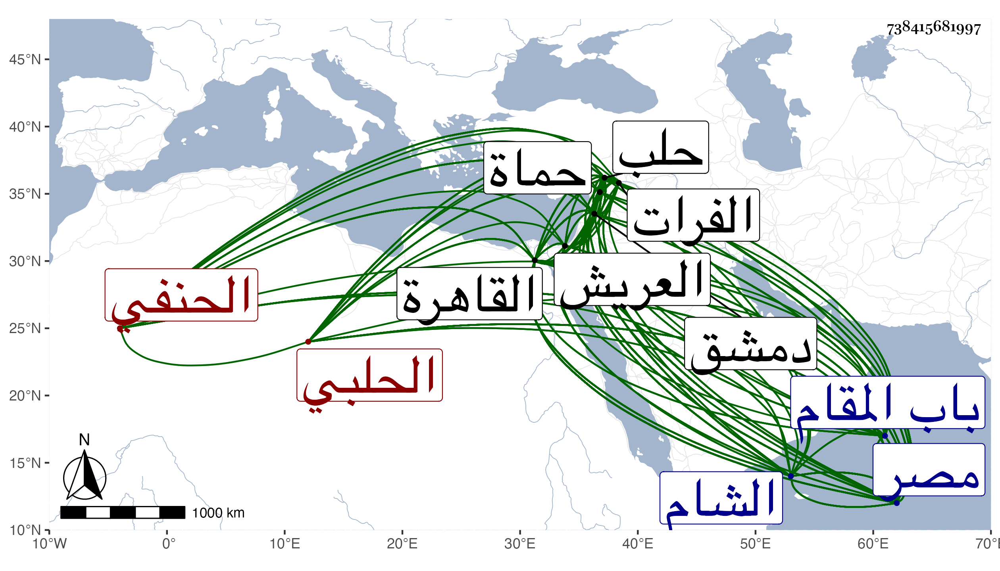

0902Sakhawi.DawLamic.ITO20230111-ara1.EIS1600.738415681997
Biography ID: 738415681997
5
محمد بن محمد بن محمد بن محمود بن غازي بن أيوب بن محمود بن الختلو المحب أبو الوليد الحلبي الحنفي الماضي ابنه المحب محمد قريبا ويعرف كسلفه بابن الشحنة . وزاد المقريزي في نسبه محمدا رابعا غلطا . ولد سنة تسع وأربعين وسبعمائة بحلب ونشأ بها في كنف أبيه فحفظ القرآن وكتبا وأخذ عن شيوخ بلده والقادمين إليها وارتحل في حياة أبيه لدمشق والقاهرة فأخذ عن مشايخها وما علمت من شيوخه سوى السيد عبد الله فقد أثبته البرهان الحلبي بل قال ولده أن ابن منصور والأنفي أذنا له في الإفتاء والتدريس قبل أن يلتحي وأنه بعد مضي سنة من وفاة والده ارتحل إلى القاهرة أيضا ونزل بالصرغتمشية فاشتهرت فضائله بحيث عينه أكمل الدين وسراج الدين لقضاء بلده وأثنيا عليه فولاه إياه الأشرف شعبان وذلك في سنة ثمان وسبعين عوضا عن الجمال إبراهيم بن العديم ورجع إلى بلده على قضائها فلم تطل مدته في الولاية بل صرف عن قرب بالجمال المشار إليه ثم أعيد واستمر إلى بعد كائنة الناصري مع الظاهر برقوق فعزله لما كان بحلب وذلك في سنة ثلاث وتسعين بسبب صحبته للناصري بل امتحنه بالمصادرة والسجن وما كفه عن قتله إلا الله على يد الجمال محمود الإستادار مع مساعدته على مقاصده ولذا امتدحه بعدة مدائح بحيث اختص به واستصحبه معه إلى القاهرة فأقام بها نحو ثلاث سنين ثم عاد إلى بلده فأقام بها بطالا ملازما للاشتغال والإشغال والتصنيف وعظمه جكم حين ولي نيابتها تعظيما بالغا وامتحن بسببه فلما قدمها الناصر ولاه قضاءها في سنة تسع وثمانمائة فاستمر ثم لما اختلفت الدول حصلت له أنكاد من أجل أنه ولي عن شيخ لما كان يحارب الناصر قضاء دمشق فلما قدم الناصر سنة ثلاث عشرة قبض عليه وعلى جماعة من جهة شيخ منهم التباني وقيدهم ثم شفع فيهم فأطلقوا وحضروا إلى مصر فعني بصاحب الترجمة كاتب السر فتح الله حتى استقر في عدة وظائف كتدريس الجمالية بعد وفاة مدرسها محمود ابن زادة وعظمه الناصر بحيث أنه كما قال ولده جلس في المولد بحضرته مع كونه معزولا عن قضاء حلب فوق ناصر الدين بن العديم قاضي مصر قال حتى ضج ابن العديم من ذلك ولم يجد له ناصرا ، ثم أنه توجه مع الناصر إلى دمشق دخلها معه فولاه قضاء مصر في زمن حصاره بدمشق لكون قاضيها ناصر الدين بن العديم كان اتصل بالمؤيد زمن الحصار ولكنه لم يباشر بل ولم يرسل لمصر نائبا فلما انجلت القضية بقتل الناصر الذي كان ابن العديم هو الحاكم بقتله ونقم على المحب انتماؤه إليه انقطع عن المجيء بدمشق واستمر ابن العديم في توجهه إلى مصر قاضيها وتقايض المحب مع الصدر بن الأدمي بوظائف لابن الأدمي بدمشق عن وظائف كانت حصلت للمحب بمصر كالجمالية وأقام المحب بدمشق فلما توجه نوروز بعد أن اقتسم هو وشيخ البلاد وكان نوروز كثير التعظيم للمحب ولاه كما قال ولده جميع ما هو في قسمه من العريش إلى الفرات قال فاقتصر منه على بلده ووصل صحبته إليها كل ذلك في سنة خمس عشرة فلم تطل أيامه . ومات عن قرب في يوم الجمعة ثاني عشر ربيع الآخر منها وصلي عليه بعد الجمعة تحت القلعة ودفن بتربة اشقتمر خارج باب المقام ، وكانت جنازته حافلة وممن حمل نعشه ملك الأمراء نوروز ومدحه الجمال عبد الله بن محمد بن زريق المعري بقصيدة بائية أولها :
| لم أدر أن ظبي الألحاظ والهدب | أمضى من الهندويات والقضب |
وقد وصفه شيخنا في ترجمة أبيه من الدرر بالإمام العلامة ، وفي إنبائه بالعلامة بل ترجم له هو فيه وقال أن اشتغل قديما ونبغ وتميز في الفقه والأدب والفنون وأنه لما رجع من القاهرة إلى حلب يعني قبل القرن أقام ملازما للاشتغال والتدريس ونشر العلم لكنه مع وصفه له بكثرة الاستحضار وعلو الهمة والنظم الفائق والخط الرائق قال إنه كبير الدعوى وفي تاريخه أوهام عديدة ، ونحوه قوله في معجمه مع وصفه بمحبة السنة وأهلها أنه عريض الدعوى له نظم كثير متوسط قال ولما فتح اللنك حلب حضر عنده في طائفة من العلماء فسألهم عن القتلى من الطائفتين من هو منهم الشهيد فقال قال رسول الله صلى الله عليه وسلم من قاتل لتكون كلمة الله هي العليا فهو في سبيل الله فاستحسن كلامه وأحسن إليه قال وأنشدني لنفسه لغزا في الفرائض فأجبته ، ولما حكى شيخنا في ترجمة الجمال يوسف اللطي قاضي الحنفية أنه كان قد اشتهر عنه أنه يقول من أكثر النظر في كتاب البخاري تزندق ويفتي بإباحة أكل الحشيشة قال إن المحب ذكر أنه دخل عليه يوما فذاكره بأشياء وأنشده كأنه يخاطب غيره وإنما عناه :
| عجبت لشيخ يأمر الناس بالتقى | وما راقب الرحمن يوما وما اتقى |
| يرى جائزا أكل الحشيشة والربا | ومن يسمع الوحي حقا تزندقا |
وأشار شيخنا لذلك أيضا في ترجمة الملطي من إنبائه حيث قال وعمل فيه لمحب الدين بن الشحنة أبياتا هجاه بها كان يزعم أنه أنشدها له بلفظه موهما أنهما لبعض الشعراء القدماء في بعض القضاة ، وذكره ابن خطيب الناصرية فقال : شيخنا وشيخ الإسلام كان إنسانا حسنا عاقلا دمث الأخلاق حلو النادرة عالي الهمة إماما عالما فاضلا ذكيا له الأدب الجيد والنظم والنثر الفائقان واليد الطولى في جميع العلوم قرأت عليه طرفا من المعاني والبيان وحضرت عنده كثيرا وكانت بيننا صحبة أكيدة ، وصنف في الفقه والتفسير وعلوم شتى وأورد قصيدة ابن زريق المشار إليها ، وقال البرهان الحلبي من بيوت الحلبيين مهر في الفقه والأدب والفرائض مع جودة الكتابة ولطف المحاضرة وحسن الشكالة يتوقد ذكاء وله تصانيف لطاف ، وقال المقريزي في عقوده أنه أفتى ودرس بحلب ودمشق والقاهرة وكان يحب الحديث وأهله ولقد قام مقاما عجز أقرانه عنه وتعجب أهل زمانه منه ، وساق جوابه لتيمور المتقدم وغيره وكان المجلس له بحيث أوصى جماعته به وبالشرف الأنصاري وأصحابهما وفي إيراد ذلك طول وقال ولده أنه ألف في التفسير وشرح الكشاف ولم يكملهما وألف لأجلي في الفقه مختصرا في غاية القصر محتويا على ما لم تحتو عليه المطولات جعله ضوابط ومستثنيات فعدم منه في بعض الأسفار واختصر منظومة النسفي في ألف بيت مع زيادة مذهب أحمد ونظم ألف بيت في عشرة علوم إلى غير ذلك في الفقه والأصول والتفسير وعامة العلوم قال وحاصل الأمر فيه أنه كان منفردا بالرياسة علما وعملا في بلده وعصره وغرة في جبهة دهره ولي قضاء حلب ودمشق والقاهرة ثم قضاء الشام كله وقدم حلب فقدرت وفاته بها وسلم له في علومه الباهرة وبحوثه النيرة الظاهرة وانتهى أمره إلى ترك التقليد بل كان يجتهد في مذهب إمامه ويخرج على أصوله وقواعده ويختار أقوالا يعمل بها وأثنى على جميع نظمه وذكر أن ممن أخذ عنه العز الحاضري والبدر بن سلامة بحلب وابن قاضي شهبة وابن الأذرعي بالشام وابن الهمام وابن التنسي والسفطي وابن عبيد الله بمصر وقرأت بخط آخرهم أنه قرأ عليه بالقاهرة حين قدمها سنة ثلاث عشرة ولزم دروسه إلى سفره في أواخر التي تليها صحبة العسكر وقال أن الناصر قربه واستصحبه معه فالله أعلم بذلك كله ، ومن تصانيفه أيضا اختصار تاريخ المؤيد صاحب حماة مع التذييل عليه إلى زمنه على طريق الاختصار وسيرة نبوية والرحلة القسرية بالديار المصرية ، وقد أوردت في ترجمته من ذيل قضاة مصر فوائد كثيرة من نظمه ونثره ومطارحات وحكايات ، ومن نظمه :
| أسماء عشر رسول الله بشرهم | بجنة الخلد عمن زانها وعمر |
| سعيد سعد على عثمان طلحة أبو | بكر ابن عوف ابن جراح الزبير عمر |
وقوله :
| كنت بخفض العيش في رفعة | منتصب القامة ظلي ظليل |
| فاحدودب الظهر وها أضلعي | تعد والأعين مني تسيل |
